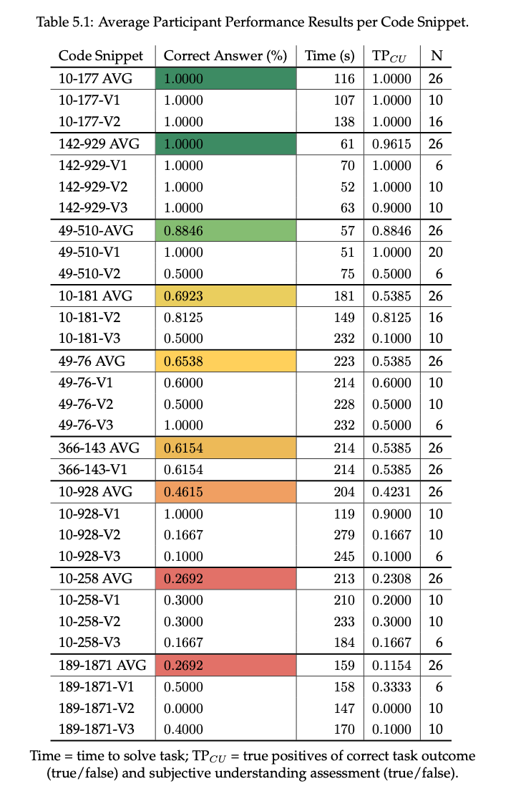
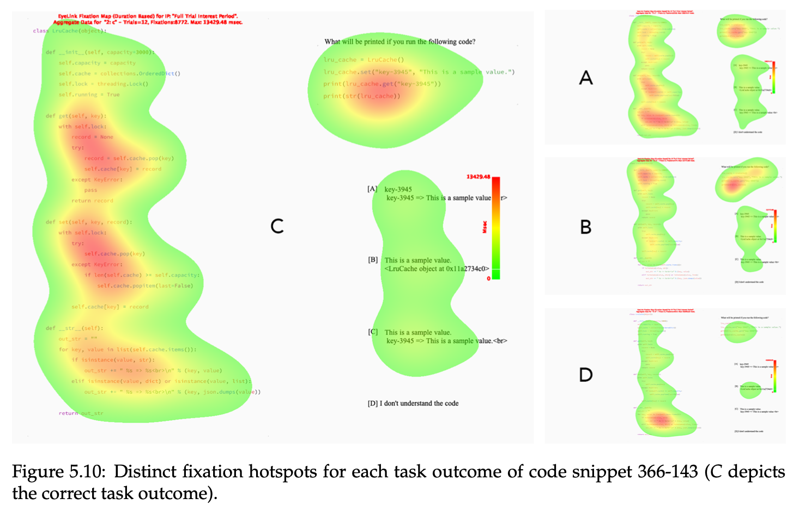
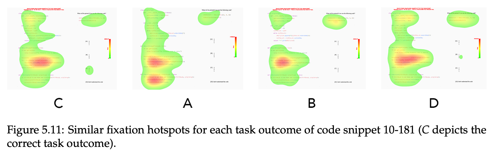
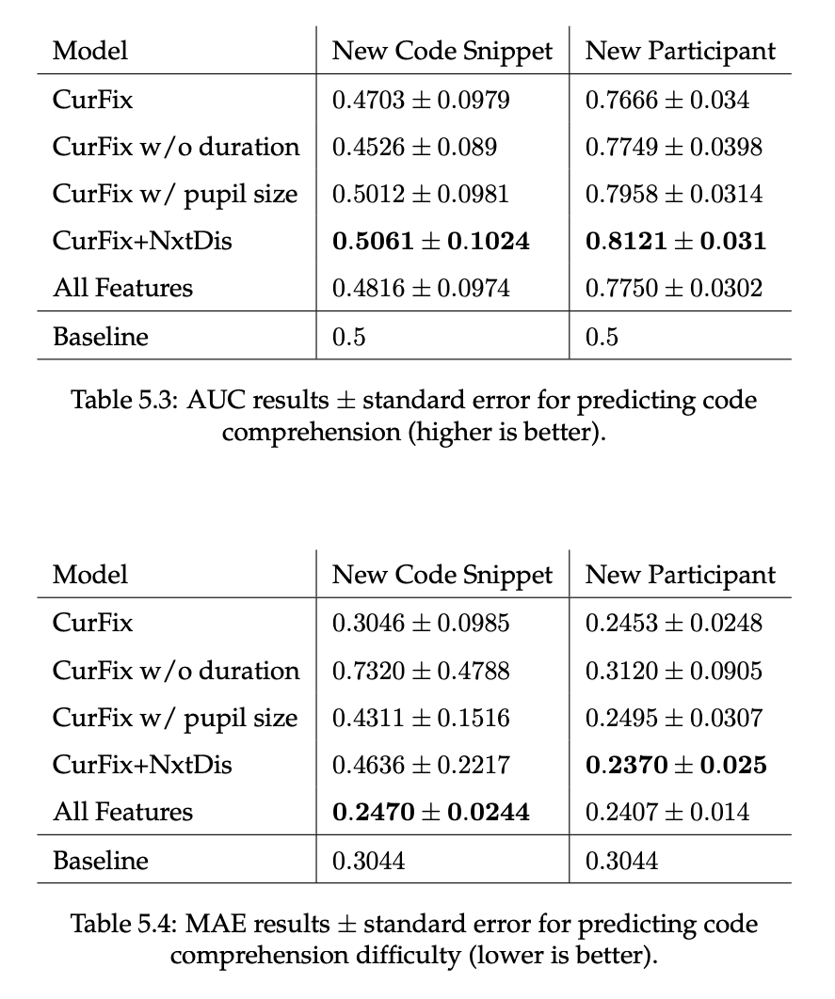
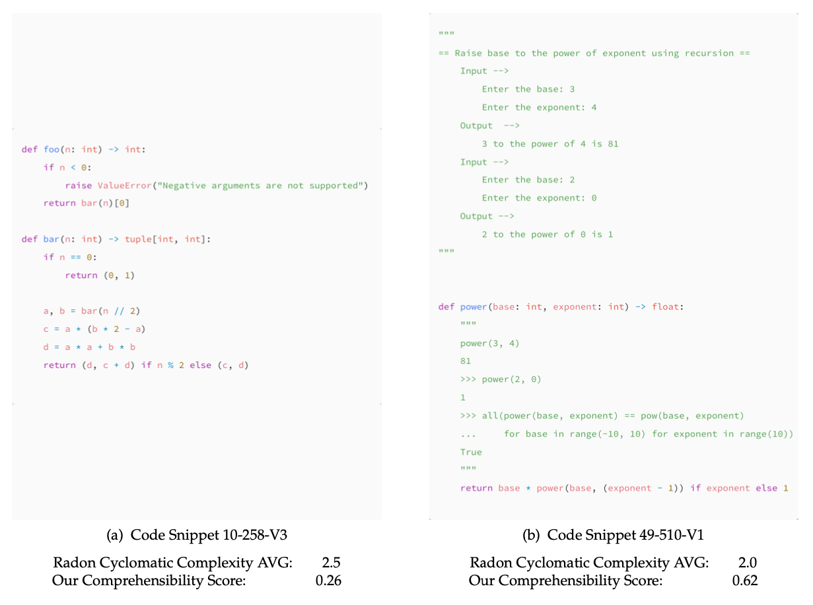

Predicting Code Comprehension using Eye-Tracking
Bachelor Thesis by Tarek Alakmeh
Supervisior: Prof. Dr. Thomas Fritz
Advisor: Prof. Dr. Lena Jäger
Advisor: David Reich
GOAL
Predict Code Comprehension and
the difficulty thereof.
WHY?
Existing code complexity metrics
are outdated and flawed.
e.g. Cyclomatic Complexity [McCabe, 1976]
,
Halstead complexity measures [Halstead, 1977]
 Source: SonarSource
Source: SonarSource
Human-Inclusive Code Evaluation System
Neural Network & Eye-Tracking
1. Source Code Snippets
1. Source Code Snippets
2. Setup & Conduct Eye-Tracking Experiment
1. Source Code Snippets
2. Setup & Conduct Eye-Tracking Experiment
3. Analyze Data & Train Neural Network
1. Source Code Snippets
1. Source Code Snippets
Diverse & Real-World Code
1. Source Code Snippets
Diverse & Real-World Code
Previous Studies
Text-Book Examples
Open Source Repositories
Proprietary Industry Code
1. Source Code Snippets
Diverse & Real-World Code
from
Open Source Repositories
50'000 Code Snippets
Initial Phase (Retrieval)
20'000 Code Snippets
2nd Phase (filter too long/short)
NONE
LOOP
REC
BOTH
AST Walker Segmentation Random Sampling
3rd Phase (diversity filter)
NONE
LOOP
Raw Random Sampling
25%
25%
25%
25%
AST Walker Segmentation Random Sampling
3rd Phase (diversity filter)
25 Random Snippets per Category
3rd Phase (diversity filter)
Manual Inspection & Validation Survey
4
9 Final Code Snippets
5
AST Walker Segmented Sampling
Raw Sampling
9 Final Code Snippets
5
1. Source Code Snippets
2. Setup & Conduct Eye-Tracking Experiment
3. Analyze Data & Train Neural Network
2. Setup & Conduct Eye-Tracking Experiment
1. Source Code Snippets
2. Setup & Conduct Eye-Tracking Experiment
3. Analyze Data & Train Neural Network
3. Analyze Data & Train Neural Network
3. Analyze Data & Train Neural Network
Reading behaviours
Reading behavior
Reading behavior
Reading behavior
Reading behavior
Reading behavior
INPUT LAYER
INPUT LAYER
INPUT LAYER
DROPOUT LAYER
NORMALIZATION LAYER
DENSE LAYER
Neural Network Architecture
Neural Network Performance
Cross Validation over New Participants / New Code Snippets
Neural Network Performance
Cycl. Complexity vs. Our Comprehensibility Score
Reading behavior
Vertical Slides
Slides can be nested inside of each other.
Use the Space key to navigate through all slides.
Basement Level 1
Nested slides are useful for adding additional detail underneath a high level horizontal slide.
Basement Level 2
That's it, time to go back up.
Slides
Not a coder? Not a problem. There's a fully-featured visual editor for authoring these, try it out at https://slides.com.
Hidden Slides
This slide is visible in the source, but hidden when the presentation is viewed. You can show all hidden slides by setting the `showHiddenSlides` config option to `true`.
Pretty Code
import React, { useState } from 'react';
function Example() {
const [count, setCount] = useState(0);
return (
...
);
}
Code syntax highlighting courtesy of highlight.js.
With animations
Point of View
Press ESC to enter the slide overview.
Hold down the alt key (ctrl in Linux) and click on any element to zoom towards it using zoom.js. Click again to zoom back out.
(NOTE: Use ctrl + click in Linux.)
Auto-Animate
Automatically animate matching elements across slides with Auto-Animate.
Auto-Animate
Auto-Animate
Touch Optimized
Presentations look great on touch devices, like mobile phones and tablets. Simply swipe through your slides.
Add the r-fit-text class to auto-size text
FIT TEXT
Fragments
Hit the next arrow...
... to step through ...
... a fragmented slide.
Fragment Styles
There's different types of fragments, like:
grow
shrink
fade-out
fade-right, up, down, left
fade-in-then-out
fade-in-then-semi-out
Highlight red blue green
Transition Styles
You can select from different transitions, like:
None -
Fade -
Slide -
Convex -
Concave -
Zoom
Themes
reveal.js comes with a few themes built in:
Black (default) -
White -
League -
Sky -
Beige -
Simple
Serif -
Blood -
Night -
Moon -
Solarized
Slide Backgrounds
Set data-background="#dddddd" on a slide to change the background color. All CSS color formats are supported.
Gradient Backgrounds
<section data-background-gradient=
"linear-gradient(to bottom, #ddd, #191919)">Image Backgrounds
<section data-background="image.png">Tiled Backgrounds
<section data-background="image.png" data-background-repeat="repeat" data-background-size="100px">Video Backgrounds
<section data-background-video="video.mp4,video.webm">... and GIFs!
Background Transitions
Different background transitions are available via the backgroundTransition option. This one's called "zoom".
Reveal.configure({ backgroundTransition: 'zoom' })Background Transitions
You can override background transitions per-slide.
<section data-background-transition="zoom">Iframe Backgrounds
Since reveal.js runs on the web, you can easily embed other web content. Try interacting with the page in the background.
Marvelous List
- No order here
- Or here
- Or here
- Or here
Fantastic Ordered List
- One is smaller than...
- Two is smaller than...
- Three!
Tabular Tables
| Item | Value | Quantity |
|---|---|---|
| Apples | $1 | 7 |
| Lemonade | $2 | 18 |
| Bread | $3 | 2 |
Clever Quotes
These guys come in two forms, inline: The nice thing about standards is that there are so many to choose from
and block:
“For years there has been a theory that millions of monkeys typing at random on millions of typewriters would reproduce the entire works of Shakespeare. The Internet has proven this theory to be untrue.”
Intergalactic Interconnections
You can link between slides internally, like this.
Speaker View
There's a speaker view. It includes a timer, preview of the upcoming slide as well as your speaker notes.
Press the S key to try it out.
Export to PDF
Presentations can be exported to PDF, here's an example:
Global State
Set data-state="something" on a slide and "something"
will be added as a class to the document element when the slide is open. This lets you
apply broader style changes, like switching the page background.
State Events
Additionally custom events can be triggered on a per slide basis by binding to the data-state name.
Reveal.on( 'customevent', function() {
console.log( '"customevent" has fired' );
} );
Take a Moment
Press B or . on your keyboard to pause the presentation. This is helpful when you're on stage and want to take distracting slides off the screen.
Much more
- Right-to-left support
- Extensive JavaScript API
- Auto-progression
- Parallax backgrounds
- Custom keyboard bindings